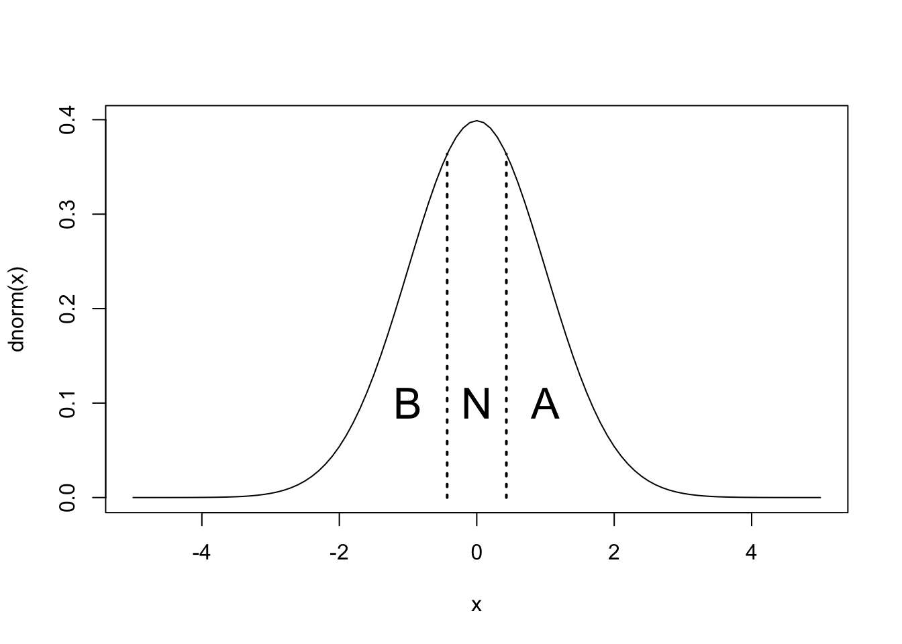

curve(dnorm, -5, 5)
Pr <- 1 / 3
segments(qnorm(Pr), 0, qnorm(Pr), dnorm(qnorm(Pr)), lty = 3, lwd = 2)
segments(qnorm(1-Pr), 0, qnorm(1-Pr), dnorm(qnorm(1-Pr)), lty = 3, lwd = 2)
text(c(-1, 0, 1), rep(0.1, 3), c("B", "N", "A"), cex = 2)
榎本剛
July 28, 2025
Kharin and Zwiers (2003) に基づいて、ROC（Relative Operating Characteristic, 相対運用特性）曲線やROCスコアについて述べる。
ノイズを含む気候システムとその予測を次のように表す。
\[ \begin{aligned} X &= \beta + \epsilon\\ F &= \beta' + \epsilon' \end{aligned} \]
\(X\) は被予測変数、 \(\beta\) は潜在的予測可能なシグナル、 \(\epsilon\) はノイズで、その分散は \(\sigma^2_\epsilon\) であるとする。 \(F\) は予報、 \(\beta'\) はシミュレートされたシグナル、 \(\epsilon'\) はノイズを表す。 完全予測システムでは、 \(\beta = \beta',\,\sigma^2_{\epsilon'} = \sigma^2_\epsilon\) となる。
\(2\times 2\)の分割表に基づいて、気候予測に基づく警報の検証を考える。
| 観測 | 警報あり | 警報なし | 計 |
|---|---|---|---|
| 現象あり | \(H\) | \(M\) | \(O\) |
| 現象なし | \(\mathrm{FA}\) | \(\mathrm{CR}\) | \(O'\) |
| 計 | \(W\) | \(W'\) | \(N\) |
\(N\)回の予測中、\(O\)回事例が発生、\(O' = N - O\)回事例は発生せず、 \(W\) 回警報を出し、 \(W' = N - W\) 回出さなかったとする。 \(H\) は当たり（hit）、\(M\) は見逃し（miss）、 \(\mathrm{FA}\)は空振り（false alarm）、 \(CR\) は見送り（correct rejection）の回数を表す。
このとき、的中率は \(\mathrm{HR} = H / O\)、空振り率は \(\mathrm{FAR} = \mathrm{FA} / O'\) で表される。 \(\mathrm{HR} = 1\; \mathrm{FAR} = 0\) ならば予測は完璧である。 一方、\(\mathrm{HR} = \mathrm{FAR}\) は、スキルがないことを表す。 \(\mathrm{HR} = 1\; \mathrm{FAR} = 1\) は、常に警報を出しており、 \(\mathrm{HR} = 0\; \mathrm{FAR} = 0\) は、常に警報を出していないことを表す。
アンサンブル予測システムにおいて、確率 \(P>P_{\mathrm{cr}}\) のときに警報を出すことにする。 的中率と空振り率は臨界確率 \(P_{\mathrm{cr}}\) の関数として次のように表される。
\[ \begin{aligned} \mathrm{HR}(P_{\mathrm{cr}}) &= \int_{\Omega_P} f(P|E = 1)\mathrm{d}P\\ \mathrm{FAR}(P_{\mathrm{cr}}) &= \int_{\Omega_P} f(P|E = 0)\mathrm{d}P \end{aligned} \tag{1}\]
ここで \(\Omega_P\)は 予報確率 \(P>P_{\mathrm{cr}}\) 、 \(f(P|E)\) は確率予報の現象あり（\(E=1\)）またはなし （\(E=0\)）の条件付確率密度函数を表し、 Bayesの定理により次のように書ける。
\[ f(P|E) = \frac{f(E|P)f_P(P)}{f_E(E)} \tag{2}\]
ここで、 \(f(E|P)\) は予報確率 \(P\) の下での予報対象 \(E\) の条件付確率密度函数、\(f_P(P)\) 及び \(f_E(E)\) はそれぞれアンサンブル予報と予報対象の周辺確率密度関数である。
標本のばらつきを無視し、\(P=P(\beta')\) であるとする。 さらに、完全予測を仮定して \(\beta' = \beta\) とする。
Equation 2をEquation 1に代入、上記の仮定を用いると
\[ \begin{aligned} \mathrm{HR}(P_{\mathrm{cr}}) &= \frac{1}{\mathrm{P_r}(E=1)}\int_{\Omega_{\beta}} f(E = 1|\beta)f_{\beta}(\beta)\mathrm{d}\beta\\ \mathrm{FAR}(P_{\mathrm{cr}}) &= \frac{1}{\mathrm{P_r}(E=0)}\int_{\Omega_{\beta}} f(E = 0|\beta)f_{\beta}(\beta)\mathrm{d}\beta \end{aligned} \tag{3}\]
と書ける。
ここで、季節予報のような3分類、平年より低い（B）、平年並み（N）、平年より高い（A）の予報を考える。 現象の確率密度函数はガウス分布であるとする。
気候システム全体の分散で規格化した予測可能シグナルの分散を潜在予測可能性と定義する。
\[ \rho_{\mathrm{pot}}^2 = \frac{\sigma_\beta^2}{\sigma_X^2} \]
\(\sigma_X^2 = \sigma_\beta^2 + \sigma_\epsilon^2\) という関係がある。 以下、\(\sigma_X = 1\) とする。
シグナルは平均0、分散 \(\sigma_\beta^2\) のガウス分布に従うものとする。
\[f_\beta(\beta) \sim N(0, \sigma_\beta^2)\]
例えば、平年より高い（A）は
\[f(E=1|\beta) = 1- F(q_\mathrm{a}|\beta, \sigma_\epsilon)\]
と表される。 ここで\(F(q, \mu, \sigma^2)\) はガウス分布の累積確率密度函数を表す。 一方、平年並み（N）は
\[F(q_\mathrm{a}|\beta, \sigma_\epsilon) - F(q_\mathrm{b}|\beta, \sigma_\epsilon)\]
と表される。 また、現象なしの条件付確立密度函数は次のように表される。
\[f(E=0|\beta) = 1 - f(E=1|\beta)\]
上述の等確率の例で、異なる潜在予測可能性に対して、閾値 \(P_{\mathrm{cr}}\) を変化させながらEquation 3を数値的に評価し、横軸を空振り率、縦軸を的中率として表したROC曲線が次の図である。 スキルのない予報は斜めの破線、完璧な予報は原点、 \((0,\,1)\) 、 \((1,\,1)\) を繋ぐ折れ線で表される。
roc_ab <- function(rpot, Pcr, Pr = 1 / 3) {
sb <- sqrt(rpot)
se <- sqrt(1 - rpot)
qa <- qnorm(1 - Pr)
bcr <- qa - qnorm(1 - Pcr, 0, se)
bcr[bcr==Inf] <- 1000 # adhoc fix to avoid FAR = HR = 0 for Pcr = Inf
fb <- function(b) {dnorm(b, 0, sb)}
f_E0_b <- function(b){pnorm(qa, b, se)}
f_E1_b <- function(b){1 - pnorm(qa, b, se)}
HR <- rep(0, length(bcr))
FAR <- rep(0, length(bcr))
for (i in 1:length(bcr)) {
HR[i] <- integrate(function(b){f_E1_b(b) * fb(b)}, lower = bcr[i], upper = Inf)$value / Pr
FAR[i] <- integrate(function(b){f_E0_b(b) * fb(b)}, lower = bcr[i], upper = Inf)$value / (1 - Pr)
}
list(FAR = FAR, HR = HR)
}
roc_n <- function(rpot, Pcr, Pr = 1 / 3) {
sb <- sqrt(rpot)
se <- sqrt(1 - rpot)
qa <- qnorm(1 - Pr)
qb <- qnorm(Pr)
fb <- function(b) {dnorm(b, 0, sb)}
f_E0_b <- function(b){1 - pnorm(qa, b, se) + pnorm(qb, b, se)}
f_E1_b <- function(b){pnorm(qa, b, se) - pnorm(qb, b, se)}
Pcr <- Pcr[Pcr <= f_E1_b(0)]
n <- length(Pcr)
bcr <- rep(0, n)
for (i in 1:n) {
bcr[i] <- uniroot(function(b){f_E1_b(b) - Pcr[i]}, c(0, 5))$root
}
HR <- rep(0, n)
FAR <- rep(0, n)
for (i in 1:n) {
HR[i] <- integrate(function(b){f_E1_b(b) * fb(b)}, lower = -bcr[i], upper = bcr[i])$value / Pr
FAR[i] <- integrate(function(b){f_E0_b(b) * fb(b)}, lower = -bcr[i], upper = bcr[i])$value / (1 - Pr)
}
list(FAR = FAR, HR = HR, Pcr = Pcr)
}
par(mar = c(4, 5, 2, 1), mfrow = c(1, 2))
rpot <- c(0.15, 0.3, 0.6)
w <- c(1, 2, 3)
plot(1, type = "n", xlim = c(-0.1, 1), ylim = c(0, 1),
main = "ROC curves for above/below normal", xlab = "FAR", ylab = "HR",
asp = 1)
far_p <- matrix(0, 9, 3)
hr_p <- matrix(0, 9, 3)
for (i in 1:3) {
Pcr <- seq(0, 1, 0.01)
farhr <- roc_ab(rpot[i], Pcr)
lines(farhr$FAR, farhr$HR, lwd = w[i])
Pcr <- seq(0.1, 0.9, 0.1)
farhr <- roc_ab(rpot[i], Pcr)
far_p[, i] <- farhr$FAR
hr_p[, i] <- farhr$HR
points(farhr$FAR, farhr$HR, pch = 16)
}
text(farhr$FAR, farhr$HR, paste0(Pcr * 100, "%"), pos = 2)
segments(0, 0, 1, 1, lwd = 2, lty = 2)
for (i in 1:9) {
segments(far_p[i, 1], hr_p[i, 1], far_p[i, 2], hr_p[i, 2], lty = 3)
segments(far_p[i, 2], hr_p[i, 2], far_p[i, 3], hr_p[i, 3], lty = 3)
}
legend("bottomright", title = expression(rho[pot]^2), legend = rpot, lty = 1, lwd = w)
plot(1, type = "n", xlim = c(-0.1, 1), ylim = c(0, 1),
main = "ROC curves for normal", xlab = "FAR", ylab = "HR",
asp = 1)
far_p <- matrix(0, 3, 3)
hr_p <- matrix(0, 3, 3)
for (i in 1:3) {
Pcr <- seq(0.01, 0.99, 0.01)
farhr <- roc_n(rpot[i], Pcr)
lines(c(farhr$FAR, 0), c(farhr$HR, 0), lwd = w[i])
Pcr <- seq(0.1, 0.9, 0.1)
farhr <- roc_n(rpot[i], Pcr)
far_p[, i] <- farhr$FAR[1:3]
hr_p[, i] <- farhr$HR[1:3]
points(farhr$FAR, farhr$HR, pch = 16)
}
text(farhr$FAR, farhr$HR, paste0(farhr$Pcr * 100, "%"), pos = 2)
segments(0, 0, 1, 1, lwd = 2, lty = 2)
for (i in 1:3) {
segments(far_p[i, 1], hr_p[i, 1], far_p[i, 2], hr_p[i, 2], lty = 3)
segments(far_p[i, 2], hr_p[i, 2], far_p[i, 3], hr_p[i, 3], lty = 3)
}
legend("bottomright", title = expression(rho[pot]^2), legend = rpot, lty = 1, lwd = w)ROCスコア \(A_{\mathrm{ROC}}\) は、ROC曲線の下の面積で表され、スキルなしは \(A_{\mathrm{ROC}} = 0.5\) 完璧な予報は \(A_{\mathrm{ROC}} = 1\) である。
ROCスキルスコア \(S_{\mathrm{ROC}}\) は次の式で定義される。
\[ S_{\mathrm{ROC}} = 2A_{\mathrm{ROC}} - 1 \]
ROCスキルスコアで完璧な予報は\(S_{\mathrm{ROC}} = 1\)、スキルなしは \(S_{\mathrm{ROC}} = 0\) となる。
int_trapeziodal <- function(x, y) {
dx <- abs(diff(x))
ybar <- 0.5 * (y[-length(y)] + y[-1])
sum(dx * ybar)
}
sroc_ab <- function(rpot, dpcr = 0.01) {
Pcr <- seq(0, 1, dpcr)
farhr <- roc_ab(rpot, Pcr)
aroc <- int_trapeziodal(farhr$FAR, farhr$HR)
2 * aroc - 1
}
sroc_n <- function(rpot, dpcr = 0.01) {
Pcr <- seq(dpcr, 1, dpcr)
farhr <- roc_n(rpot, Pcr)
x <- farhr$FAR
y <- farhr$HR
n <- length(x)
if (x[1] < 1) {
x <- c(1, x)
y <- c(1, y)
}
if (x[n] > 0) {
x <- c(x, 0)
y <- c(y, 0)
}
aroc <- int_trapeziodal(x, y)
2 * aroc - 1
}
rpot <- seq(0.01, 0.99, 0.01)
n <- length(rpot)
s_ab <- rep(0, n)
s_n <- rep(0, n)
for (i in 1:n) {
s_ab[i] <- sroc_ab(rpot[i])
s_n[i] <- sroc_n(rpot[i])
}
s_ab <- c(0, s_ab, 1)
s_n <- c(0, s_n, 1)
rpot <- c(0, rpot, 1)
par(mar = c(4, 5, 2, 1))
plot(rpot, s_ab, type = "l", lwd = 2, asp = 1,
main = "ROC skill score",
xlab = expression(rho[pot]^2), ylab = expression(S[roc]),
cex.main = 2, cex.axis = 2, cex.lab = 2)
lines(rpot, s_n, lwd = 2, lty = 2)
legend("topleft", c("above/below", "normal"), lwd = 2, lty = c(1, 2), cex = 2)ROC曲線やスコアには次のような性質がある。